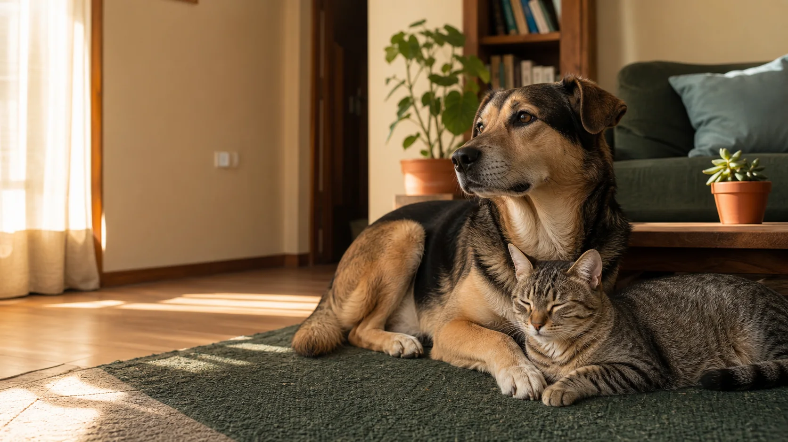
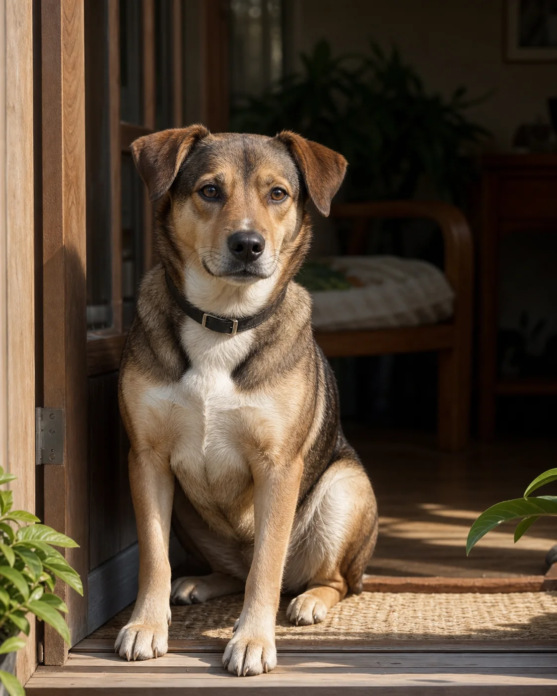

Conocé animales que necesitan un lugar por unos días y elegí cómo ayudar. My Pets acompaña cada paso.
Podés mirar sus perfiles sin registrarte. Te pedimos datos recién cuando quieras avanzar.

Hoy, Mora necesita un lugar.
Está a 3,2 km y puede quedarse sola hasta seis horas.
Animales cerca tuyo
¿A quién podés ayudar hoy?
Empezamos por los casos más urgentes y compatibles con tu zona. Después podés ajustar la búsqueda.
Estoy buscando

A 3,2 km de tu zona
Necesita tránsito antes del viernes
Mora
Es tranquila, se lleva bien con gatos y necesita una casa donde bajar un cambio.
2 años aproximadamente · tamaño mediano · vacunada Puede quedarse sola hasta 6 horas.
Vas a ver su rutina, sus cuidados y qué tipo de hogar necesita.
Mora
Necesita tránsito antes del viernes
Tiene alrededor de 2 años. Es serena, curiosa y cuando entra en confianza busca compañía.
Son tres preguntas y no te comprometen a recibirla.
Para estar bien necesita: un lugar tranquilo durante una a tres semanas, dos paseos por día y unos minutos para adaptarse. Convive bien con gatos. Con perros, primero hacemos una presentación.
Si hay compatibilidad, enviás tu disponibilidad. Recién después el equipo de My Pets abre una conversación.
Lo que aprendimos sobre ella
Su historia ayuda a cuidarla mejor.
Mora llegó asustada y pasó su primera noche en un espacio tranquilo. Ya dormía relajada y empezó a pedir paseos. La familia que la acompañó dejó anotadas sus rutinas, lo que come y qué la ayuda cuando se inquieta.
HoyEstá lista para conocer su próximo hogar de tránsito.
Compatibilidad con Mora
¿Por cuánto tiempo podrías recibirla?
Pregunta 1 de 3
Elegí lo más realista para vos hoy.
Podés elegir la opción que mejor describe tu casa.
Última pregunta. Esto ayuda a cuidar su rutina.
Revisá que esta descripción sea correcta.
Podría recibir a Mora entre una y tres semanas, vivo solo o con otros adultos y quedaría sola hasta seis horas.
La dirección exacta nunca se publica. Sólo la ve el equipo cuando un caso avanza.
Compatibilidad inicial
Tu casa podría servirle a Mora.
Tus respuestas coinciden con sus necesidades principales. Falta que el equipo revise el caso con vos.
El tiempo disponible coincide.
La convivencia es compatible.
Su rutina entra en un día normal para vos.
Al enviar, My Pets recibe tus respuestas y te escribe para conversar. Todavía no estás confirmando el tránsito.
✓
Disponibilidad enviada
Listo. El equipo ya puede revisar tu caso.
Vas a encontrar las novedades y la conversación en Mis casos.
“Los primeros días necesita paciencia. Después se vuelve una compañera muy tranquila.” — Lucía, su tránsito actual
Mis casos
Todo lo que sigue, en un lugar.
Acá ves qué está pasando, quién debe responder y cuál es el próximo paso.
El equipo está revisando tu disponibilidad
Mora · posible tránsito
Enviado hoy. No tenés que hacer nada por ahora. Cuando el equipo responda, la conversación aparece acá.
Hace siete días que Mora llegó a casa.
Seguimiento de adopción
¿Cómo está comiendo desde que llegó?
Tu respuesta ayuda al equipo a saber si todo sigue bien o si conviene acompañarte.
El equipo recibe tu respuesta y abre un mensaje para revisar la rutina con vos.
Operación My Pets
Qué necesita una decisión hoy.
La bandeja prioriza casos, no mensajes. Cada ingreso muestra el motivo y la acción que sigue.
Próxima decisión
Revisar si la casa de Julián puede recibir a Mora.
Tiene disponibilidad por tres semanas, vive solo y ya transitó una perra mediana.
Mora · ingresó el 5 de junio Tránsito actual: Lucía R. · disponible hasta el viernes Última novedad: come bien y ya puede quedarse sola hasta seis horas.